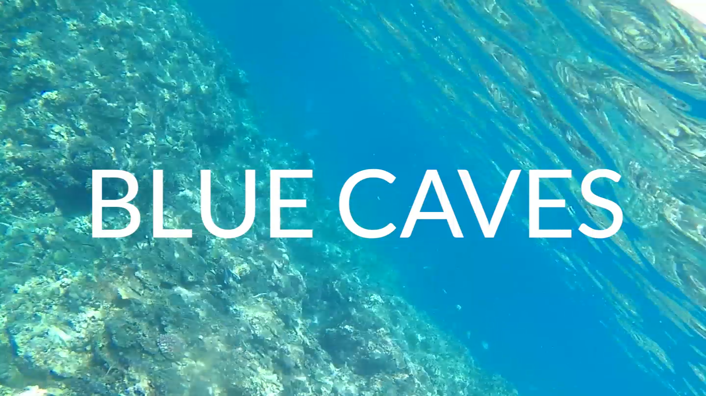
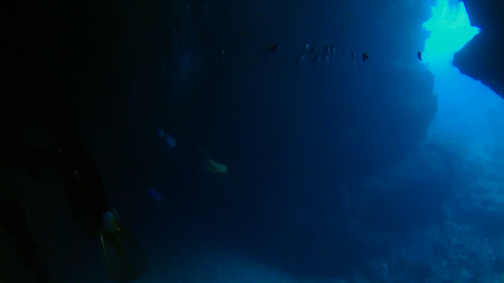
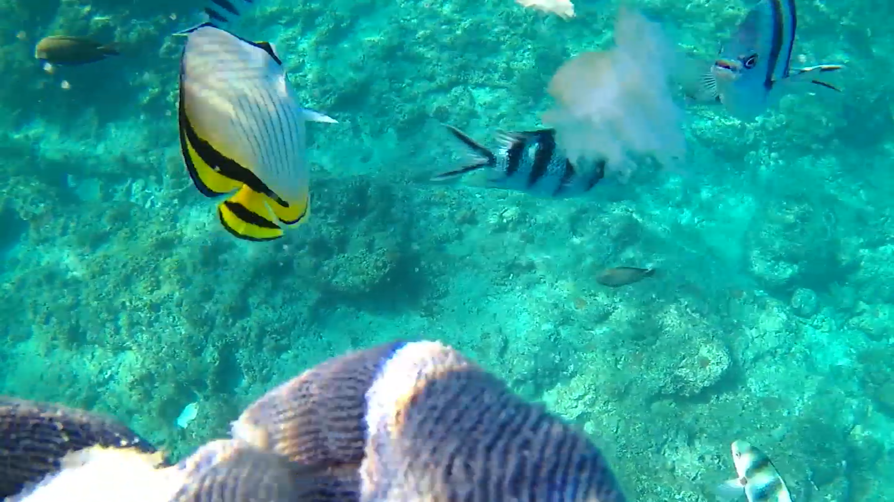
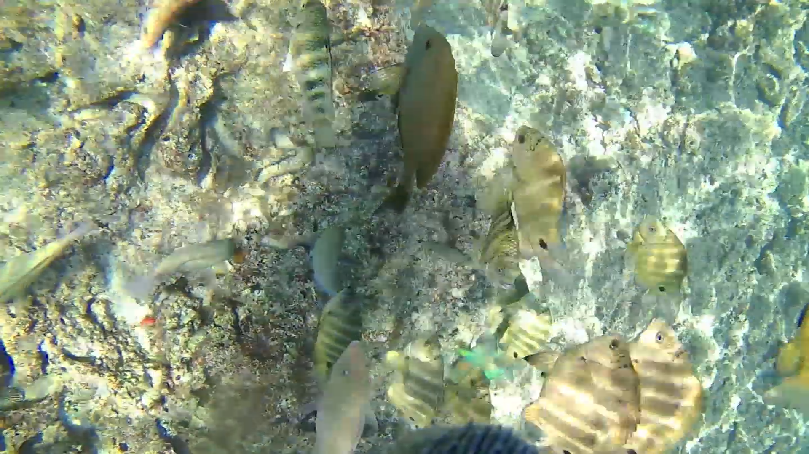
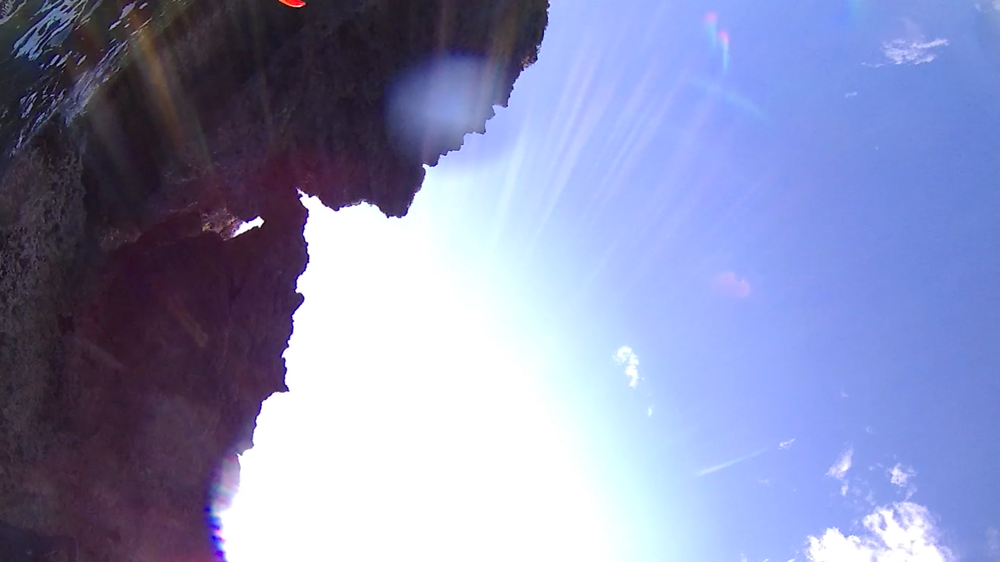
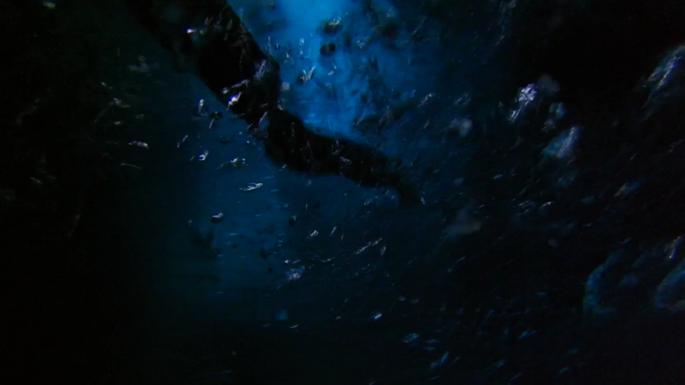
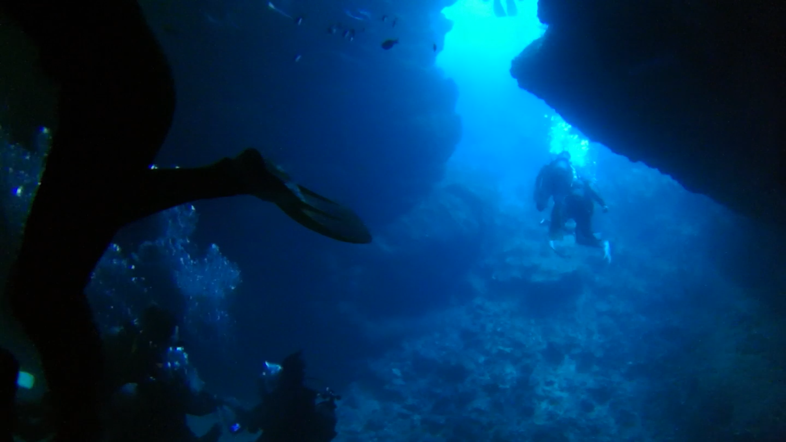
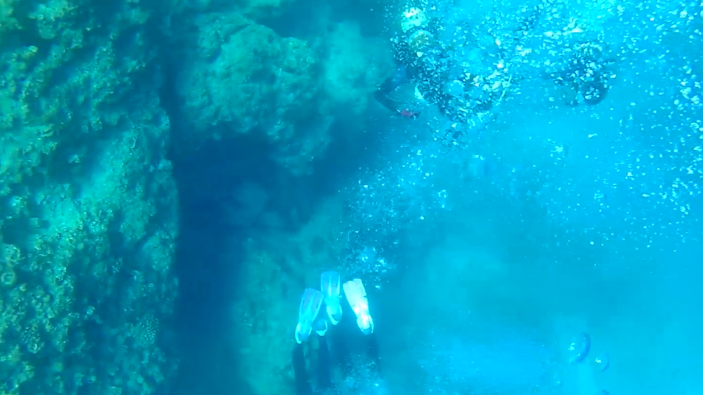
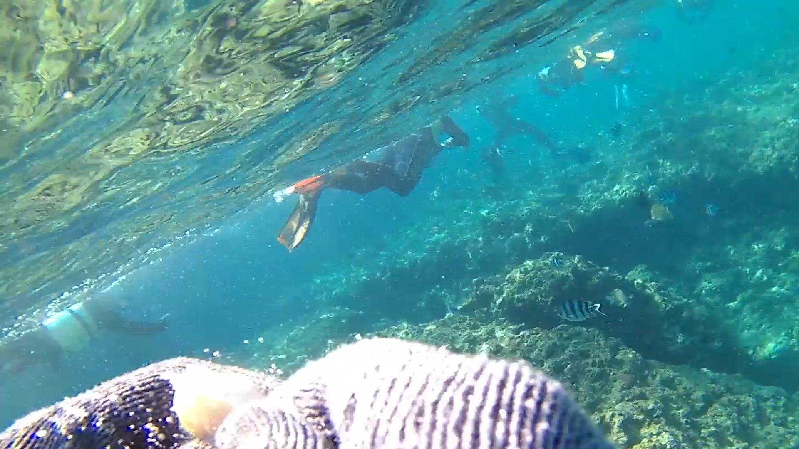

B L U E C A V E S
https://youtu.be/eZNBBWMtC4kこの映像は、沖縄にある青の洞窟にいった時の記録映像です。
腕にアクションカメラを設置し、洞窟内の様子や、魚に餌やりをしている様子を撮影しました.
アクションカメラ撮影の実験もかねての撮影だったため
操作など慣れてはいませんでしたが、望むクオリティーの映像は撮れました。
洞窟内から映像は始まり、餌やり、水面の流れで終わります。
作品時間：9 分 3 秒 制作期間：2ヶ月
撮影機材：アクションカメラ キーワード 沖縄×ドキュメンタリー
第0章
英語で青の洞窟の BLUE CAVES をタイトルにしました。
背景を海の中にしたのは、洞窟に向かっている始まりを描いています。
第1章
タイトルが消えると青の洞窟内になります。
映像自体 9 分 03 秒と長いので最初に一番見せたい部分を持ってきました。
第2章
英語で青の洞窟の BLUE CAVES をタイトルにしました。
シュノーケリングツアーに魚のえさやりが付いていたので、そのシーンです。
魚も大きめのが多く迫力があります。
第3章
第 2 章のえさやりの流れで浅瀬の場面です。
洞窟外とは違い人も多く、魚も小さいのが多いです。
第4章
沖縄の空。最後は陸に上がり、空を映して終わります。
  